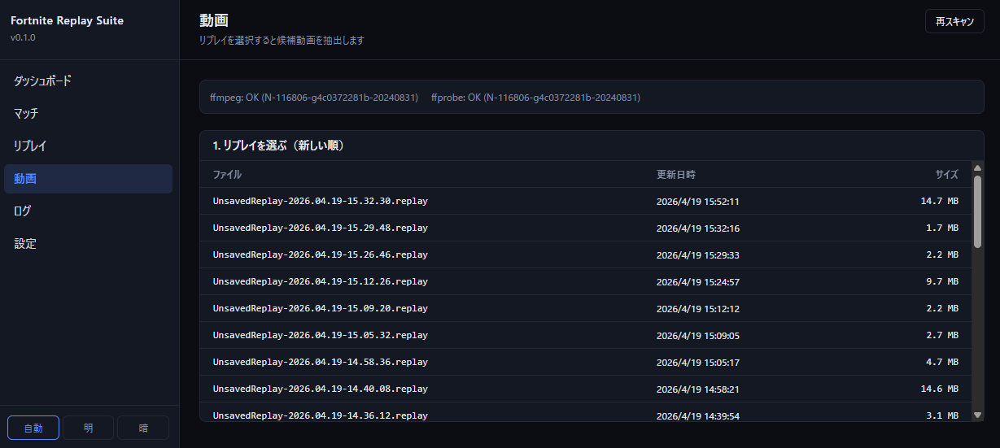
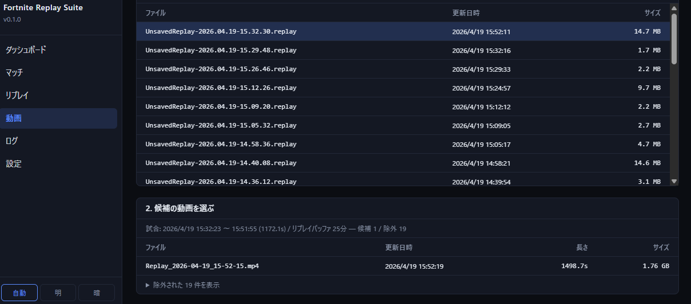
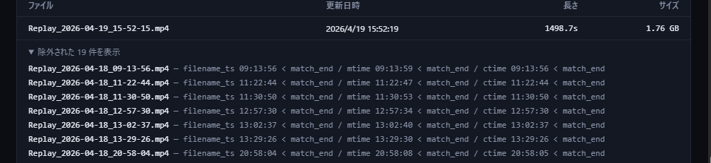
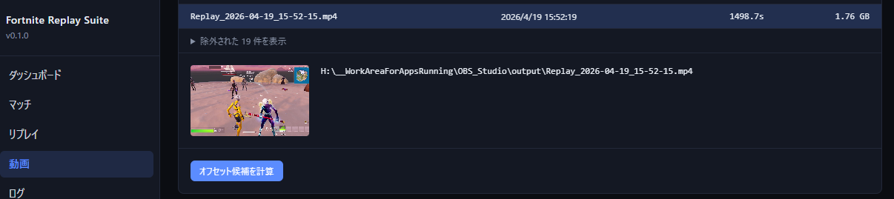
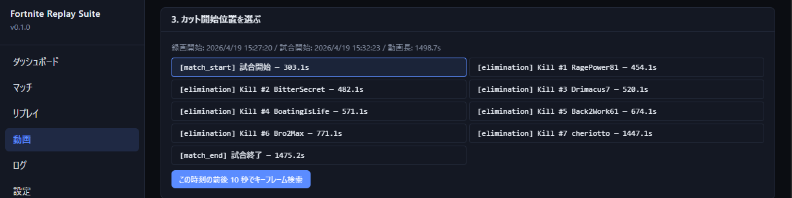
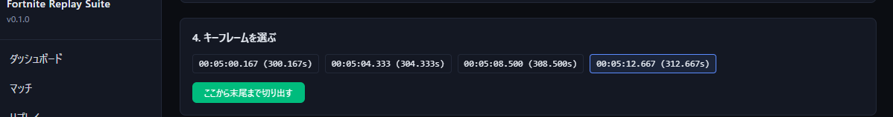
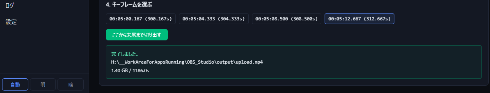

「リプレイを選ぶ → 該当試合を含みうる動画を絞る → 動画を選ぶ → 切り出し位置を選ぶ」の順で進みます。OBS のリプレイバッファ（既定 25 分）の中から、リプレイの試合時刻と重なる動画だけが自動で抽出されます。
1ffmpeg / ffprobe ヘルス
サイドバー「動画」または /videos を開くと、ページ上部に ffmpeg / ffprobe のバージョン情報が表示されます。OK バッジが両方緑であることを最初に確認してください。

ffmpeg/ffprobe が PATH 上に見つからないと FAIL バッジが表示され、トリミングボタンも無効化されます。01 章 §1 で PATH を再確認してください。
2リプレイを選ぶ
「1. リプレイを選ぶ」テーブルから、振り返りたい試合のリプレイ行をクリックします。新しい順に並んでいます。
3候補動画の自動絞り込み
リプレイを選ぶと自動的に POST /api/prepare-upload/videos-for-replay が走り、obs_recording_dir 配下から「その試合を含みうる動画」だけが抽出されてテーブル表示されます。

| フィルタルール | 判定基準 |
|---|---|
| ① 録画時刻ウィンドウ | 動画の ファイル名 / mtime / ctime のいずれかが、試合終了時刻 ± リプレイバッファ秒の範囲内 |
| ② 動画長フィルタ | 動画の duration >= 試合長。試合長がリプレイバッファより長い場合はスキップ（注記あり） |
判定に使うリプレイバッファ秒は config.json の obs.replay_buffer_sec（既定 1500 秒 = 25 分）。OBS 側の実設定（01 章 §2 Step 2）と揃えてください。
4除外動画の確認
テーブル下部の <details> 「除外された N 件を表示」を開くと、フィルタで弾かれた動画とその理由が一覧できます。期待している動画が候補に出てこない場合の切り分けに使ってください。

5動画を選ぶ
候補動画一覧から行をクリックすると、その動画の 0 秒地点のサムネイルとフルパスがテーブル下に表示されます。「これで合っているか」をビジュアルで確認するためのプレビューです。

動画が正しければ「オフセット候補を計算」ボタンを押して次に進みます。
6オフセット候補の計算
計算が完了すると「3. カット開始位置を選ぶ」セクションが現れ、リプレイから抽出された試合イベントごとのオフセット（動画の何秒目か）がボタン群として並びます。

| kind | 意味 | ラベル例 |
|---|---|---|
match_start |
試合開始時刻 | [match_start] 試合開始 — 12.3s |
kill |
自分が相手を倒した瞬間 | [kill] Kill #2 @08:14 EnemyName — 642.3s |
death |
自分が倒された瞬間 | [death] Death ← KillerName — 1234.5s |
match_end |
試合終了時刻 | [match_end] 試合終了 — 1456.7s |
config.user_player_id（player.epic_display_name）が設定されていれば、Kill / Death の候補は「自分が Killer または Victim の試合イベント」だけに絞り込まれます。未設定の場合は全イベントが並びます。
切り出したいイベントのボタンをクリックすると青枠で選択状態になり、その下の「この時刻の前後 10 秒でキーフレーム検索」ボタンが活性化します。
7キーフレーム選択
キーフレーム検索ボタンを押すと、選んだオフセット ±10 秒の範囲にある I フレーム（キーフレーム）の一覧が「4. キーフレームを選ぶ」セクションに表示されます。

ffmpeg で 無劣化（コピーモード）で切り出すには、開始位置が I フレームである必要があります。任意の秒数で切ると再エンコードが発生し、画質劣化と長い処理時間が伴います。プリセットの ±10 秒範囲から自動で I フレームを拾うことで、無劣化トリミングを保証します。
8トリミング実行
I フレームのボタンを 1 つ選び、緑の「ここから末尾まで切り出す」ボタンをクリックすると、その位置から動画の末尾までを obs_recording_dir 配下に出力します。

無劣化のストリームコピーで処理されるため、再エンコードは発生しません。出力サイズと尺によりますが、数秒〜十数秒で完了します。